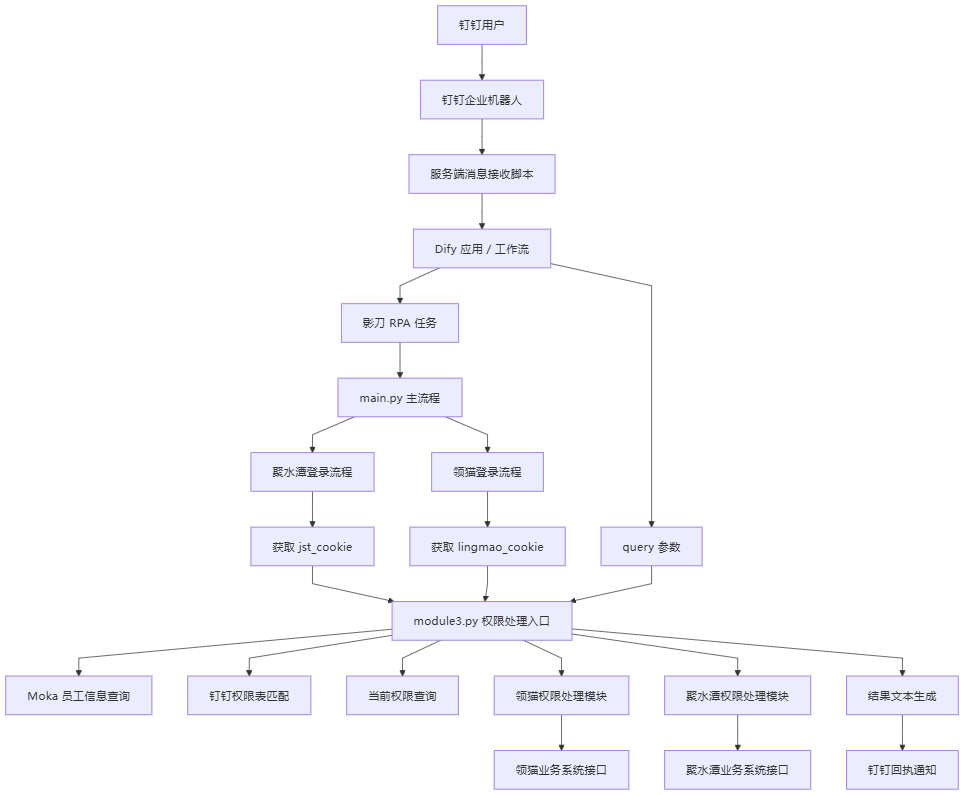

项目目标
将企业权限查询、调整、同步和对比请求转为可执行任务，并把处理结果回传钉钉。
Project Summary
将企业权限查询、调整、同步和对比请求转为可执行任务，并把处理结果回传钉钉。
Dify、影刀 RPA、Python、钉钉 Stream、Webhook、systemd。
负责意图和字段设计、Dify 工作流、RPA 登录调度、Python 权限逻辑、服务部署与异常排查。
完成 4 类权限意图、2 套业务系统和 1 条结果回执闭环；项目已完成实施并运行正常。
Overview
原权限处理依赖运维人员理解需求、查询员工和权限表、登录多个业务系统、手工配置并反馈结果。项目将重复判断和操作拆分给 Dify、影刀 RPA 与 Python。
查询员工在领猫和聚水潭中的当前角色、组织或权限组，只读返回结果。
根据员工部门、权限模板或明确权限关键词，匹配钉钉权限对照表并执行新增或调整。
以指定员工作为参考，查询双方权限后同步到目标员工，并返回处理结果。
对比两名员工在业务系统中的角色和权限组，只返回差异，不执行修改。
Architecture
钉钉负责请求入口和结果触达，Dify 负责结构化识别，影刀负责登录态与调度，Python 负责权限逻辑和接口分发。

梳理权限处理场景和参数字段，搭建 Dify 意图提取工作流与影刀 Webhook 调用，部署钉钉 Stream 服务端监听，组织 RPA 登录取 Cookie，并通过 Python 模块完成查询、匹配、同步和结果回执。
Dify 不接触业务系统 Cookie；Cookie 由影刀登录后传给 Python。核心逻辑集中在 module3.py，按 action 和 intent_type 分发到只读查询、按表调整、参考员工同步或权限对比模块。
Stage Summary
明确钉钉、Dify、影刀、Python、业务系统接口和结果回执之间的数据流与职责边界。
记录权限查询、单系统调整、双系统调整和按参考员工同步等实际使用方式。
记录 Dify 节点、影刀 HTTP 调用、钉钉 Stream 桥接服务和 systemd 运行方式。
记录影刀获取登录态、module3.py 参数解析和不同权限动作的脚本分发。
缺少员工、系统或权限参数时返回可读提示；接口异常由 Python 日志和钉钉回执反馈，不静默吞掉错误。
权限处理完成后回传钉钉结果，并通过 RPA 记录和 Python 日志核对执行状态。
将权限请求识别、RPA 调度、Python 处理和钉钉回执串联，便于查询执行记录和定位异常。